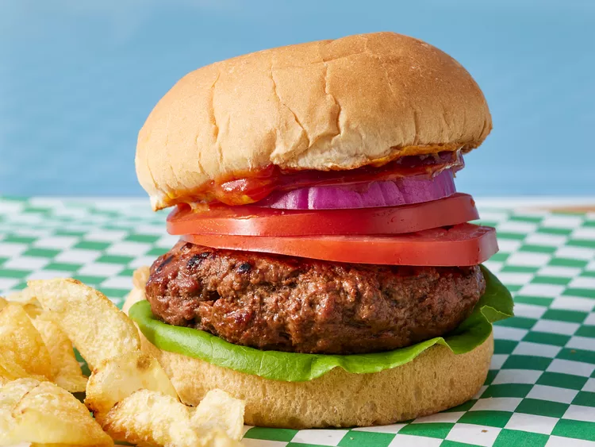

Home
Grilled Hamburger Recipe

Photo by Dotdash Meredith Food Studios
Description
This grilled hamburger recipe is a classic favorite that's perfect for summer barbecues or casual dinners. Juicy and flavorful, these burgers are easy to make and can be customized with your favorite toppings.
Ingredients
- 1 lb ground beef (80% lean)
- 1 teaspoon salt
- 1/2 teaspoon black pepper
- 4 hamburger buns
- Optional toppings: lettuce, tomato, onion, pickles, cheese, ketchup, mustard, mayonnaise
Steps
- Preheat your grill to medium-high heat.
- In a bowl, gently mix the ground beef with salt and pepper. Be careful not to overwork the meat to keep the burgers tender.
- Divide the mixture into 4 equal portions and shape each portion into a patty about 3/4 inch thick. Make a slight indentation in the center of each patty to prevent it from puffing up during cooking.
- Place the patties on the preheated grill. Cook for about 4-5 minutes on one side, then flip and cook for another 4-5 minutes on the other side for medium doneness. Adjust cooking time if you prefer your burgers more or less cooked.
- If you're adding cheese, place a slice on each patty during the last minute of cooking and close the grill lid to melt the cheese.
- Remove the patties from the grill and let them rest for a few minutes.
- Toast the hamburger buns on the grill for about 1 minute until lightly browned.
- Assemble your burgers by placing each patty on a bun and adding your favorite toppings. Serve immediately and enjoy your delicious grilled hamburgers!